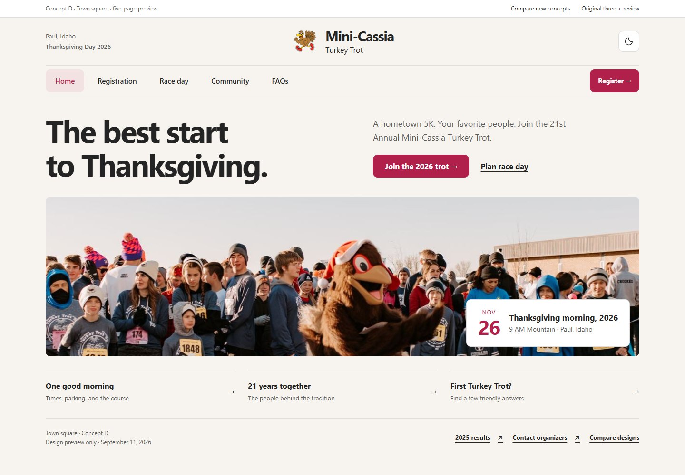
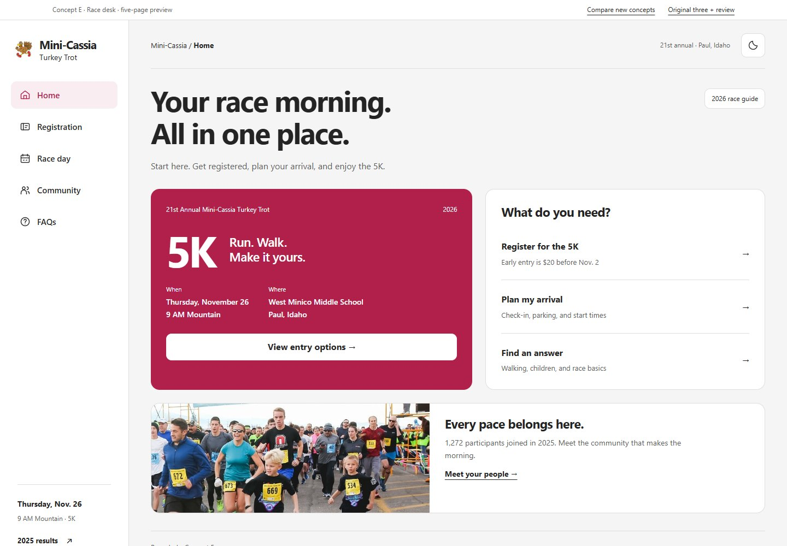
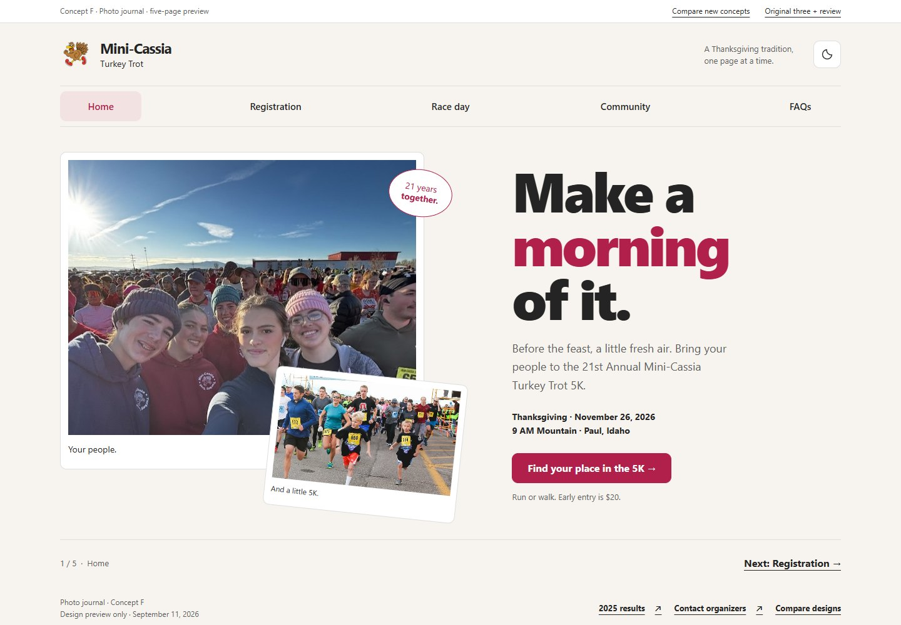

D. Town square
A welcoming event website with a traditional masthead, panoramic photography, and straightforward page navigation.
Explore Town square →The clearest continuation of your existing community brand.
No long-scroll homepage this time. Each concept is a complete five-page mini-site with real links, browser history, and focused content.

A welcoming event website with a traditional masthead, panoramic photography, and straightforward page navigation.
Explore Town square →The clearest continuation of your existing community brand.

A compact race-planning hub with a persistent sidebar, practical information panels, and a personal race-day checklist.
Explore Race desk →The strongest choice for visitors who want answers quickly.

A photo-led, five-chapter invitation with generous typography, page-to-page reading, and an interactive community album.
Explore Photo journal →The most expressive option for family and community storytelling.